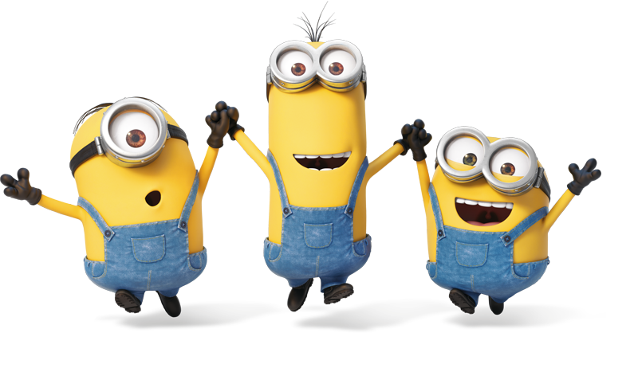

Biografía y breve Historia
Los minions son una raza que nace con el único objetivo de servir a un villano y ayudarlo. Carecen de capacidad de reproducirse y de morir. Se estima que el más joven de todos tiene 30 mil millones de años. En las primeras dos películas nos dejan en claro el origen de los minions, son una creación del Dr. Nefario que en su búsqueda por hacer al trabajador perfecto mezcló ADN mutante, ácidos grasos y dos tazas y media de plátanos triturados. Así nacen los minions los cuales forman el no muy brillante equipo de Gru. Son trabajadores natos y entregados a su líder y a sus locas hazañas, los minions siempre están dispuestos a prestarse a nuevos experimentos. En la tierra desde los inicios cuando vivían rodeados de dinosaurios. Fueron concebidos para realizar el trabajo sucio de un villano. Solo tienen tres dedos y siempre llevan un mono vaquero de vestimenta. Estos bichos amarillos se diferencian por su estatura, anchura o peinado. Hay algunos que tienen un solo ojo. Además, también existe la versión morada, más violenta, que es una evolución derivada de inyectar suero en los minions.
¿En qué idioma hablan los Minions?
El lenguaje o idioma que hablan los minions es conocido como «MINION GIBBERISH», la segunda palabra significa “escritura o discurso inentendible o sin sentido”, por lo que se bautizó a su idioma de esa manera. Aunque lo “inentendible” de sus palabras es cuestionable, puesto que las palabras del lenguaje que usan los minions en realidad son una mezcla de palabras en idioma indio, francés, español e italiano y la mayoría hacen referencia a platillos de comida. Por ejemplo, «poulet tikka masala» es «pollo indio» en francés. Y no olvidemos el “Ten para tú” o el “Pepete” haciendo referencia a un JUGUETE en español.
Insignias de los minions
Tanto los minions amarillos como los minions morados tienen un overol y en cada overol está marcada una insignia con una letra. Para el caso de los amarillos llevan una insignia con una letra G, esta es debido a que su creador es GRÚ, mientras para los minions morados portan el overol con la insignia M ya que su creador es el MACHO.